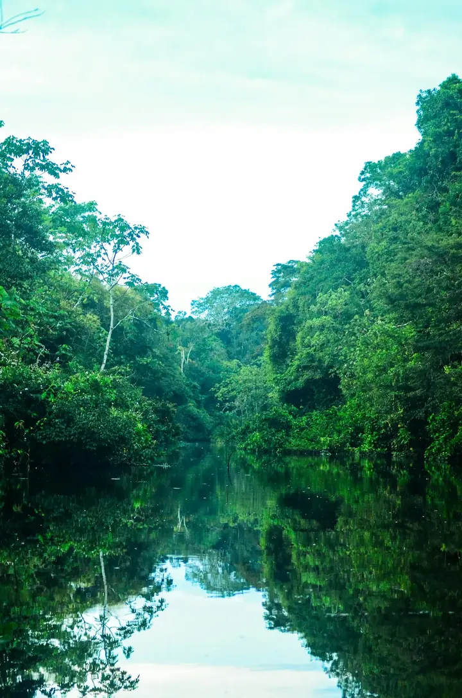
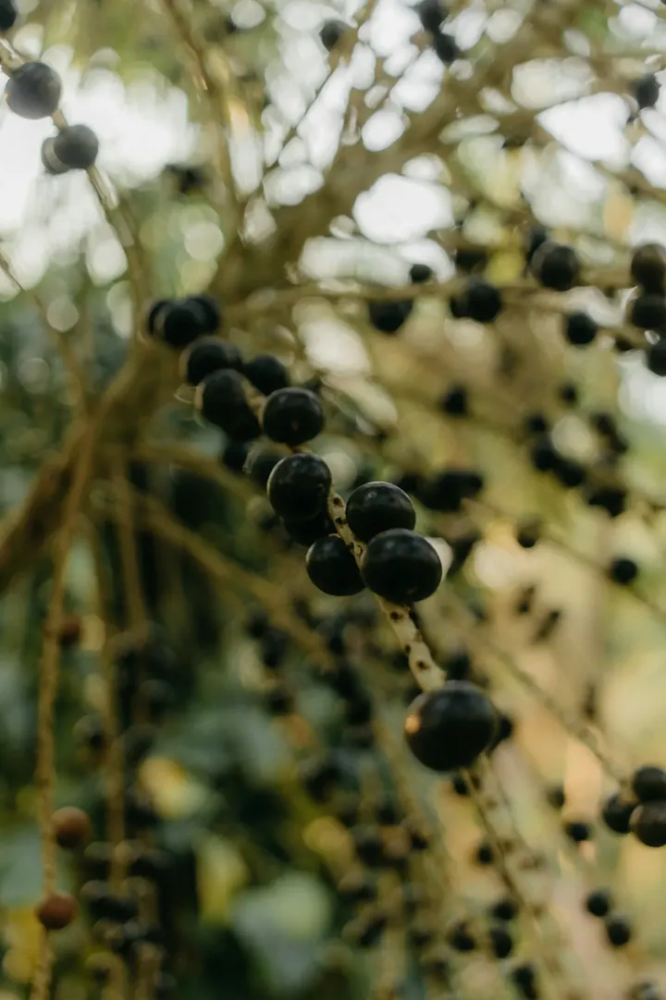
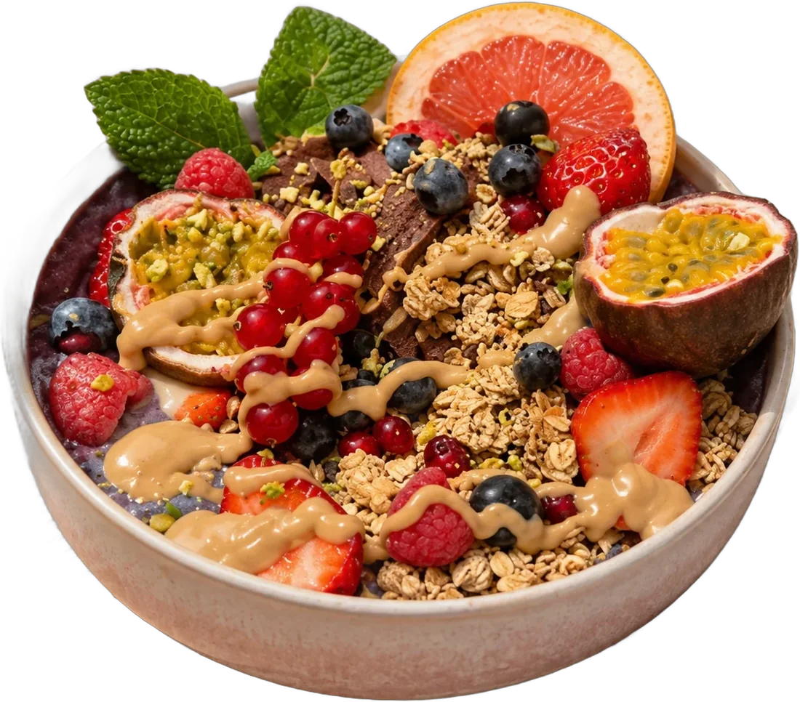

Bowlers · Bowls aus dem Regenwald
Die Reise
der Açaí.
Sie hängt hoch oben in der Palme. Komm mit, bis sie in deiner Bowl landet.
Scrollen: der Beere folgen
Station 1 · Herkunft
Am Amazonas.
Açaí wächst an der Palme Euterpe oleracea, vor allem im Bundesstaat Pará im Norden Brasiliens. Die schlanken Palmen stehen an Flussufern und werden über 25 Meter hoch.


Station 2 · Ernte
Von Hand gepflückt.
Pflücker klettern die Stämme hinauf und holen die reifen Rispen herunter. Noch am selben Tag werden die Beeren zu Fruchtmark verarbeitet und tiefgefroren.
Station 3 · Powerfood
Was in der kleinen Beere steckt.
- AnthocyaneDer dunkle Farbstoff, der die Beere fast schwarz macht.
- PolyphenolePflanzenstoffe, wie sie in dunklen Beeren stecken.
- BallaststoffeAus dem Fruchtfleisch, machen die Bowl sämig.
- ÖlsäureOmega-9-Fett, dasselbe wie im Olivenöl.
- MineralstoffeKalium, Calcium und Magnesium.
- <1 g Zuckerin 100 g ungesüßtem Fruchtmark.

Station 4 · Ankunft
Die Bowl.
Gefrorenes Açaí, frische Beeren, Granola und ein Hauch Nussmus.
Bowlers ist in Vorbereitung. Wer nicht warten will: Diese Bowl gibt es schon im Café nyd.
Zum Café nyd →Nächster Raum · Das Wohnzimmer
Café nyd →Brunch, Kaffee, Kuchen und der lila Ube Vanille Latte.
← Zurück zum Haus